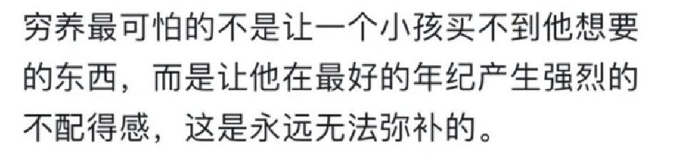

Wilf Lin
@Wilf_Lin
@im_magneto 最后的结果就是拿着钱都不知道该怎么花，然后活的跟个蛆一样的。

全麦面包🍞
@im_magneto
我觉得这句是真的……
从小被灌输家里没钱的思想，童年时期没有零花钱，无论什么想要的都不会给我。
记得小时候我说想去北京玩，最开始答应了，但后来把我骂了一顿
现在发现家里也算比较富有，但不管干什么，花钱一多就有一种不配得感、负罪感，总感觉低人一等 https://t.co/KgoHuszPis https://t.co/ziL7LfzznY